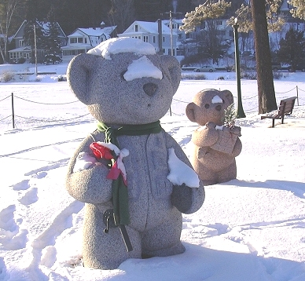
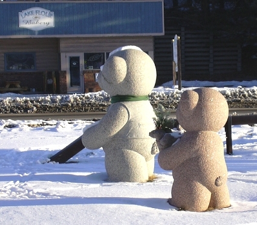

Watch out, folks! The dreaded disease, "cabin fever", is running amuck in the otherwise peaceful village of Saranac Lake. Due to a shortage of "cabin fever" serum this year, it seems some residents have been unable to get their annual preventive shots.
Case in point: A recent edition of the Adirondack Daily Enterprise featured a somewhat tongue-in-cheek editorial declaring that the stone bears in Riverside Park are an unsightly eyesore and that they should be evicted. Although this sort of editorializing may be occasionally used to motivate reader interest, "cabin fever days" in the Adirondacks is NOT one of those occasions. Surprisingly, at least to the editor, this seemingly harmless piece evoked a flood of emotionally charged responses.
Some of the readers were irate over the insinuation that the bears would be removed. Their kids love those bears! A few of the responders reacted much more violently, but with the opposite view. Probably stimulated by a diet rich in road kill and influenced by too many hours of "reality" TV shows, the riled red necks went as far as attempting to mobilize a vigilante committee to bodily remove the hapless bears and toss them into Lake Flower. This would require a large group, as the Papa bear weighs over a ton.
Saranac Lake Winter Carnival, "The Ultimate Cure For Cabin Fever", is now upon us and soon we Saranac Lakers will turn our thoughts to more peaceful pursuits, such as Spring cleaning and dodging potholes.
The bears seem relatively safe for now but, just in case some moonless night the bears vanish without a trace and end up on Ebay, I snapped some pictures for posterity.

